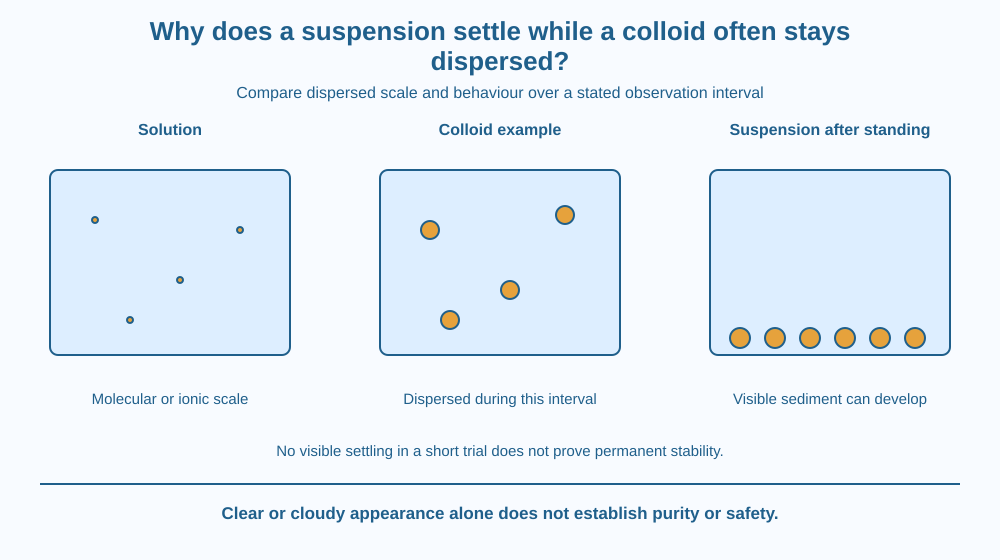

Classify a dispersion using particle behaviour over a stated observation period. Distinguish solution, suspension and colloid without treating every cloudy sample as identical. Explain why absence of visible settling is useful evidence but not a universal proof of purity or permanent stability.
A coarse solid mixed into water may settle after standing. A diluted milk sample can remain visibly dispersed over the same short period. Both may look cloudy, yet their components behave differently.
The contrast is not explained simply by saying one contains particles and the other does not. Both contain dispersed material, but particle scale, interactions and the surrounding fluid affect what happens.
Classification asks for several observations under known conditions. A sample's first colour or clarity cannot carry the whole explanation.
A dispersion contains material distributed within another medium. Its behaviour depends on the dispersed particles or droplets and the continuous material around them. A visible cloudiness can arise in more than one kind of system.
A solution contains solute dispersed at a molecular or ionic scale under the relevant conditions. The components do not normally separate by simple standing as visible grains. A clear appearance can be consistent with a solution but does not establish that the sample contains only one substance.
A suspension has dispersed particles large enough that settling and other particle-scale behaviours can become evident over a practical observation period. After standing, a layer may form at the bottom while the upper liquid changes appearance.
A colloid has an intermediate dispersed scale and can remain distributed over periods when a comparable coarse suspension separates visibly. Milk is a complex colloidal system containing dispersed structures, including droplets, rather than one simple pure liquid.
Settling behaviour is influenced by particle size, density difference, shape and the fluid. It is therefore misleading to make density alone the explanation. Very small dispersed structures do not necessarily settle visibly on the same timescale as larger particles of similar material.
Colloidal stability also depends on interactions that can help prevent particles or droplets from joining. Conditions can change that stability. Some colloids aggregate, separate or cream over time, so the word colloid does not mean guaranteed uniformity forever.
Ordinary filter paper or a kitchen mesh may retain a coarse suspension while allowing much finer dispersed material through. That observation can help a comparison, but filter performance depends on its openings and the sample. One unchanged filtrate is not a full chemical identification.
The lesson deliberately avoids making sky-colour scattering or diffusion the central explanation, since those were covered earlier. The target is classification through multiple properties and timescales. We use settling as evidence, not as a universal mechanism repeated for every treatment device.
Draw three labelled boxes with different representational scales. Use molecular symbols for a solution, small clustered structures for a colloid and larger separate grains for a suspension. State that the drawing exaggerates all sizes.
Add a clock symbol and a second view after a defined interval. Let the suspension show a sediment layer while the colloid remains dispersed in the example. Keep the word example visible so the model does not become a promise of permanent stability.
Finally add a conditions arrow that makes some colloidal structures join. This challenges the mistaken rule that a classification name prevents all future change.
The SVG compares a solution, colloidal dispersion and coarse suspension using separate containers. A second suspension view shows possible sediment after standing. The colloid panel is labelled as stable over the illustrated interval, not forever.
A scale note distinguishes molecular dispersion from larger structures without assigning rigid numerical boundaries. Such boundaries can depend on the system and convention, so the diagram teaches relative categories rather than unsupported exact cutoffs.
The graphic does not identify the sample's safety or use cloudiness as a purity certificate. It shows which observations would support a classification under stated conditions.

Paints, foods and some medicines can contain dispersed structures, but their actual formulations differ. A familiar product name should not be used to infer one universal settling time or treatment method.
In an Indian school laboratory, comparing fresh simple samples can help students see why a coarse suspension and a colloid deserve different descriptions. The record should include how the sample was prepared and how long it stood.
A water sample that remains cloudy or becomes clear is not thereby certified safe. Classification describes physical arrangement and behaviour, while biological and chemical safety require different evidence and appropriate testing.
With adult permission, use clean small containers, room-temperature water, a little kitchen flour and a small fresh milk dilution. Do not taste experimental mixtures or store them for later eating.
Flour itself is a mixed material and can create several dispersed structures. Treat it as a practical comparison, not a chemically pure reference. A paper-only version using the supplied diagram is equally suitable.
A sample shows no visible sediment after five minutes. What possible explanations remain? Consider a stable fine dispersion, slow settling or an insufficient observation interval.
Now imagine adding a condition that makes colloidal particles aggregate. Why could settling become more evident afterwards? The classification and behaviour depend on the current particle arrangement, not only the name initially written on the container.
Which description fits a colloid in the lesson model?
Answer: B — A colloid contains fine dispersed structures with behaviour distinct from a coarse suspension.
Why should the observation interval be recorded?
Answer: A — The evidence supports behaviour over the interval actually observed.
Fine particles aggregate into larger clusters. What may become more evident?
Answer: C — Larger structures can behave differently and separate more visibly under suitable conditions.
Create an observation table with ingredients, initial appearance, standing time, layer formation and filtration notes if available. Separate direct observations from the proposed class.
Add one statement explaining why neither clear nor cloudy automatically means pure. Your report should be useful even when no settling is visible within the short activity, and it must not treat a kitchen demonstration as a drinking-water safety test.
No visible change is still an observation, but it is not an unlimited conclusion. A sample stable for a few minutes has demonstrated behaviour over that interval, not for all future time. Linking the claim to the observation period makes a simple classroom comparison much more scientifically useful.
Solutions, colloids and suspensions differ in dispersed scale and behaviour; classification needs stated conditions and time, not appearance or one settling observation alone.